SAE 통보 · 권한 관리
SCR-PRJ-011 · SCR-RBAC-001·002·003·004·006 · 통보 수신자 · 역할 · 권한 · 배정 · 이력
SAE 통보
- 1.1화면 구성
- 1.2수신자 추가와 저장
1.1화면 구성
개요
중대한 이상사례(SAE)가 발생했을 때 누구에게 메일이 나갈지를 정하고, 나간 결과를 확인하는 화면입니다. 메일은 사람이 보내는 것이 아니라 이상사례의 「SAE 여부」가 「아니오」에서 「예」로 바뀌는 순간 시스템이 자동으로 보냅니다. 어느 필드가 그 「SAE 여부」인지는 AE 지정 화면에서 정합니다 — 이 화면은 받을 사람만 맡습니다.
화면 설명

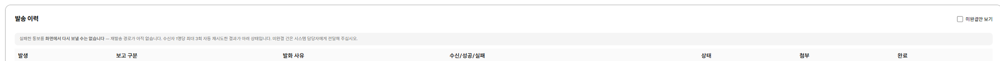
「SAE 통보 메일 발송」 — 통보 기능을 켜고 끕니다. 수신자가 한 명도 없으면 켤 수 없습니다(아래 유의사항).
「미완결만 보기」 — 발송이 끝나지 않은 건만 추려 봅니다.
화면 부제가 발화 조건을 밝힙니다 — “이상사례의 「SAE 여부」가 아니오 → 예로 바뀌는 순간 지정 수신자에게 메일이 나갑니다.”
끈 상태의 뜻 — “끄면 중대성 전이가 일어나도 메일이 나가지 않습니다 (발송 이력도 남지 않습니다).” 이력조차 남지 않는다는 점이 중요합니다.
노란 안내 — 지금은 수신자가 없어서 켤 수 없다는 안내입니다. 수신자를 넣으면 같은 자리의 문구가 바뀝니다 1.2.
메일에 무엇이 실리는지를 밝힌 문단입니다 — 본문에는 식별자·보고 구분·인지일까지만 실리지만 첨부되는 SAE 보고서에는 임상 상세가 그대로 들어갑니다 (1.2 유의사항 참조).
발송 이력 — 자동 발송된 결과가 한 건씩 쌓입니다. 캡처는 아직 발송이 없어 “발송된 통보가 없습니다.” 입니다.
회색 안내 — “실패한 통보를 화면에서 다시 보낼 수는 없습니다 — 재발송 경로가 아직 없습니다. 수신자 1명당 최대 3회 자동 재시도한 결과가 아래 상태입니다. 미완결 건은 시스템 담당자에게 전달해 주십시오.”
발송 이력 열 구성
| 열 | 담기는 내용 |
|---|---|
| 발생 · 보고 구분 | 통보가 나간 시각 · 초회 보고 또는 후속 보고 |
| 발화 사유 | 중대성 전이(아니오→예) 또는 내용 변경 |
| 수신/성공/실패 | 보낸 사람 수와 성공·실패 건수 |
| 상태 | 전원 발송 · 일부 실패 · 전원 실패 · 수신자 없음 |
| 첨부 · 완료 | SAE 보고서 파일 · 처리가 끝난 시각 |
유의사항
필수 확인 데이터 손상 · 폼 완료 불가
- • 수신자를 먼저 넣어야 통보를 켤 수 있습니다. 수신자가 0명인 상태로 「SAE 통보 메일 발송」만 체크해서 저장하면 거부됩니다 — 받을 곳이 없는 통보는 켜 둔 의미가 없기 때문입니다. 순서는 수신자 추가 → 저장 → 체크 → 저장 이 아니라, 수신자를 넣고 체크한 뒤 한 번에 저장하면 됩니다 1.2. 또한 끈 동안에는 이력도 남지 않으므로, 운영 시작 전에 켜 두는 것이 안전합니다.
1.2수신자 추가와 저장
개요
받을 사람을 한 줄에 한 명씩 넣습니다. 한 줄은 이메일과 표시 이름 두 칸으로 되어 있고, 다 넣은 뒤 「저장」을 눌러야 반영됩니다. 수신자가 한 명이라도 들어오면 카드 제목이 「수신자 (N명)」으로 바뀌고, 위의 노란 안내도 다른 문구로 교체됩니다.
화면 설명
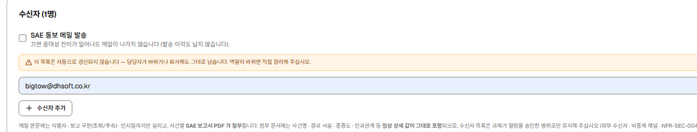
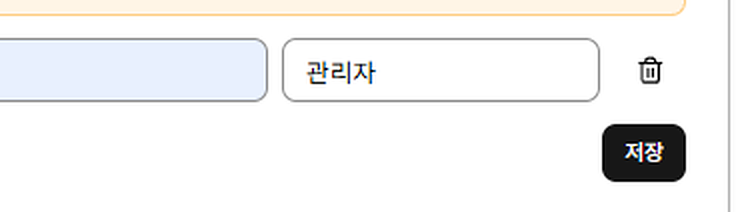
이메일 — 받을 주소입니다. 대문자·소문자만 다른 주소는 같은 주소로 취급되어 중복으로 걸립니다.
「+ 수신자 추가」 — 빈 줄을 하나 더 만듭니다. 여러 명을 넣을 때 반복합니다.
표시 이름 — 그 주소가 누구인지 알아보기 위한 이름표입니다 (캡처는 “관리자”).
삭제(휴지통) — 그 줄을 지웁니다. 마지막 한 명을 지우려 하면 확인을 한 번 더 받습니다.
「저장」 — 통보 켜기·끄기와 수신자 목록을 함께 저장합니다. 누르지 않으면 아무것도 반영되지 않습니다.
카드 제목이 「수신자 (1명)」 으로 바뀌었습니다 — 몇 명이 등록되어 있는지 여기에서 확인합니다.
노란 안내가 다른 문구로 교체되었습니다 — “이 목록은 자동으로 갱신되지 않습니다 — 담당자가 바뀌거나 퇴사해도 그대로 남습니다. 역할이 바뀌면 직접 정리해 주십시오.” (아래 유의사항)
유의사항
필수 확인 데이터 손상 · 폼 완료 불가
- • 이 목록은 시스템이 관리해 주지 않습니다 — 직접 정리해야 합니다. 담당자가 바뀌거나 퇴사해도 주소는 그대로 남아 통보가 계속 갑니다. 그런데 통보에 첨부되는 SAE 보고서에는 사건명·경과 서술·중증도·인과관계 같은 임상 상세가 그대로 들어갑니다 — 즉 이 목록이 곧 열람 범위입니다. 화면 아래 문단이 그 점을 밝히고 있으니, 과제가 열람을 승인한 범위로만 유지하고 인수인계 때마다 함께 점검하십시오. 외부 주소나 공용 메일함은 특히 주의가 필요합니다.
역할 목록·관리
- 2.1화면 구성
- 2.2행 액션 메뉴
- 2.3신규 커스텀 역할
- 2.4역할 세트 가져오기
2.1화면 구성
개요
이 프로젝트에서 어떤 역할이 쓰이는지와 각 역할이 몇 명에게 배정되었는지를 한 화면에서 봅니다. 역할은 두 갈래입니다 — 시스템이 미리 정해 둔 기본 5종과 프로젝트에서 직접 만든 커스텀 역할. 기본 역할은 지우거나 비활성화할 수 없고, 권한만 조정할 수 있습니다.
화면 설명
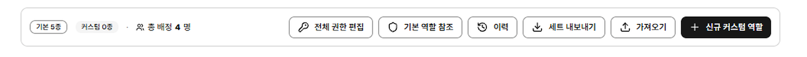
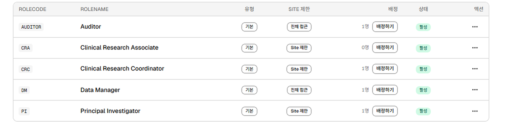
「전체 권한 편집」 — 역할 5종 × 권한 전체를 한 표에서 봅니다 4.1. 편집 권한이 없으면 라벨이 「전체 권한 보기」 로 바뀝니다.
「기본 역할 참조」 — 기본 5종이 원래 어떤 역할인지 설명하는 읽기 전용 화면입니다 4.2.
「이력」 — 역할·배정이 언제 어떻게 바뀌었는지 봅니다 4.3.
「세트 내보내기」 — 현재 역할·권한 구성을 파일로 받습니다. 감사 대응용 스냅샷으로 쓰입니다.
「가져오기」 — 내보낸 파일을 다른 프로젝트에 적용합니다 2.4.
「+ 신규 커스텀 역할」 — 이 프로젝트만의 역할을 만듭니다 2.3.
「배정하기」 — 그 역할을 사람에게 배정합니다. 누르면 배정 화면으로 이동하면서 배정 창이 자동으로 열리고 역할이 미리 선택됩니다 3.2.
⋯ — 그 역할에 대한 액션 메뉴를 엽니다 2.2.
요약 — 기본 몇 종 · 커스텀 몇 종 · 총 배정 몇 명.
표는 7열입니다 — ROLECODE · ROLENAME · 유형 · SITE 제한 · 배정 · 상태 · 액션.
유형 — 기본(시스템 제공) 또는 커스텀(직접 만든 것).
SITE 제한 — Site 제한은 자기 참여 기관의 자료만, 전체 접근은 프로젝트 전체를 봅니다.
상태 — 비활성화한 역할은 여기가 바뀌고 새 배정에 쓸 수 없습니다.
유의사항
오해하기 쉬운 동작
- • 역할을 바꾸는 일은 워크스페이스 관리자만 할 수 있습니다. 연구책임자·데이터 관리자에게도 이 화면은 열리지만 「가져오기」와 「+ 신규 커스텀 역할」은 아예 보이지 않고, 「전체 권한 편집」도 「전체 권한 보기」 로 바뀝니다 — 보이지 않는 것은 고장이 아니라 권한에 따른 정상 동작입니다. 또한 종료·보관된 프로젝트에서는 버튼이 보이되 흐리게 비활성됩니다 — 이쪽은 상태가 바뀌면 다시 쓸 수 있다는 뜻으로 둘을 구분해 표시합니다.
2.2행 액션 메뉴
개요
역할 한 줄에 대해 할 수 있는 일이 세 가지입니다. 앞의 둘은 이동이고 마지막 하나만 실제로 바꾸는 조작입니다. 메뉴는 누른 그 행에만 적용되므로, 어느 역할의 ⋯ 를 눌렀는지 먼저 확인하십시오.
화면 설명
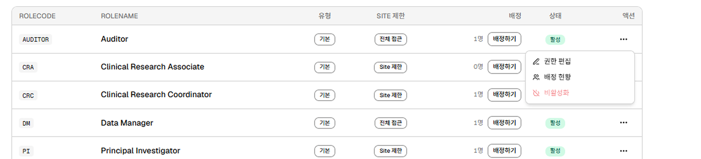

⋯ — 그 행의 메뉴를 엽니다. 다시 누르거나 바깥을 누르면 닫힙니다.
「권한 편집」 — 그 역할 하나만의 권한을 편집하는 화면으로 갑니다. 여러 역할을 한꺼번에 보려면 위쪽 「전체 권한 편집」 을 쓰십시오 4.1.
「배정 현황」 — 그 역할이 누구에게 배정되어 있는지 보는 화면으로 갑니다 3.1.
「비활성화」 — 그 역할을 더 이상 쓰지 않도록 내립니다. 캡처에서는 흐립니다 (아래 유의사항).
메뉴를 연 행이 어느 역할인지 왼쪽에서 확인합니다 — 캡처는 Auditor 행입니다.
유의사항
필수 확인 데이터 손상 · 폼 완료 불가
- • 기본 역할은 비활성화할 수 없습니다. 캡처의 「비활성화」가 흐린 것은 고장이 아니라 Auditor 가 기본 5종 중 하나이기 때문이며, 버튼 위에 마우스를 올리면 “기본 역할은 비활성화할 수 없습니다” 가 표시됩니다. 비활성화는 직접 만든 커스텀 역할이면서 아직 활성인 경우에만 켜집니다 — 종료·보관된 프로젝트에서도 꺼집니다. 기본 역할을 쓰지 않으려면 비활성화가 아니라 그 역할에 사람을 배정하지 않는 것으로 처리합니다.
2.3신규 커스텀 역할
개요
기본 5종으로 모자랄 때 이 프로젝트에서만 쓰는 역할을 만듭니다. 예를 들어 읽기만 가능한 참관자처럼 기본 역할에 없는 조합이 필요할 때 사용합니다. 여기에서는 역할의 껍데기만 만들고, 어떤 권한을 줄지는 만든 뒤에 권한 편집 화면에서 정합니다 4.1.
화면 설명
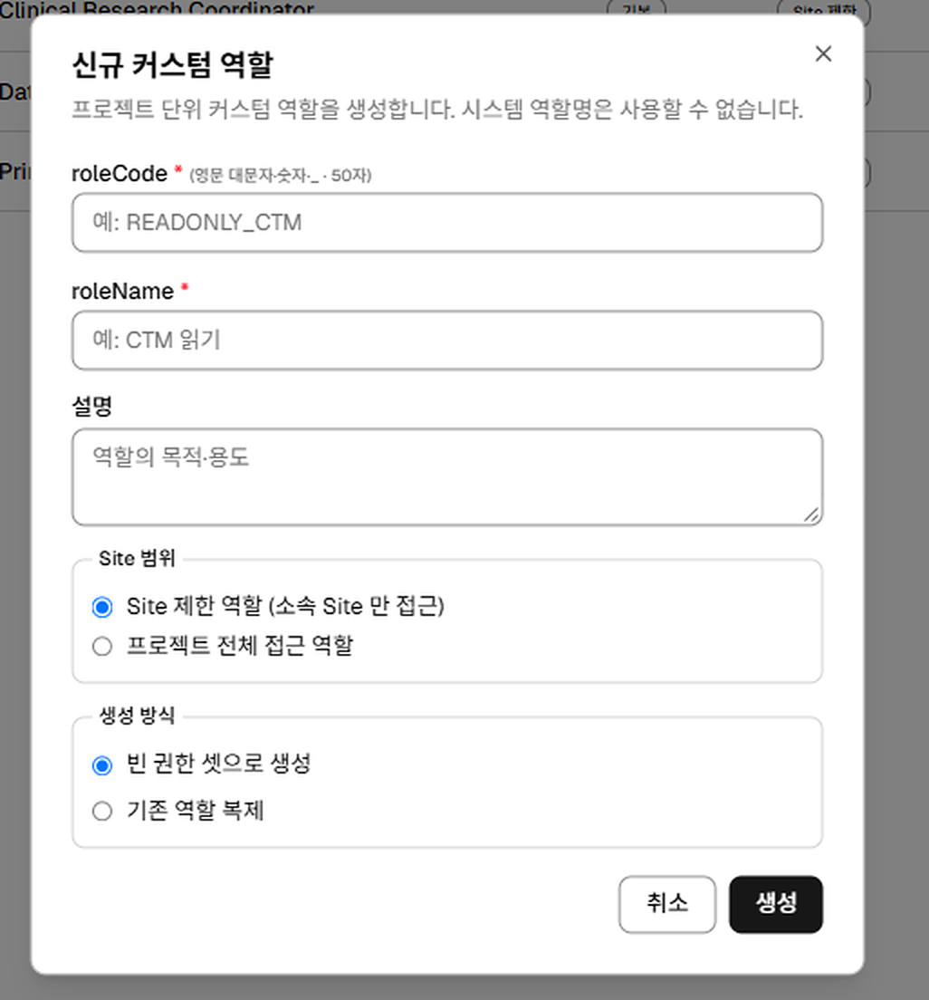
roleCode — 역할을 식별하는 코드입니다. 영문 대문자·숫자·밑줄(_) 만 쓸 수 있고 50자까지입니다 (예: READONLY_CTM).
roleName — 화면에 보일 이름입니다 (예: CTM 읽기).
설명 — 이 역할을 왜 만들었는지 적어 둡니다. 나중에 보는 사람을 위한 칸입니다.
Site 범위 — Site 제한 역할은 소속 기관의 자료만 보고, 프로젝트 전체 접근 역할은 모든 기관을 봅니다. 만든 뒤에는 이 축이 그 역할의 성격을 결정하므로 신중히 고르십시오.
생성 방식 — 빈 권한 셋으로 생성하면 권한이 하나도 없는 상태로 시작하고, 기존 역할 복제를 고르면 고른 역할의 권한을 그대로 가져와 시작합니다.
「생성」 — 역할을 만듭니다. 목록에 유형이 「커스텀」 인 줄로 추가됩니다.
창 설명이 제약을 밝힙니다 — “프로젝트 단위 커스텀 역할을 생성합니다. 시스템 역할명은 사용할 수 없습니다.”
입력 규칙이 라벨 옆에 적혀 있습니다 — “(영문 대문자·숫자·_ · 50자)”.
유의사항
필수 확인 데이터 손상 · 폼 완료 불가
- • 기본 역할과 같은 이름은 쓸 수 없습니다. PI · CRC · CRA · DM · AUDITOR 처럼 시스템이 쓰는 이름을 roleCode 에 넣으면 거부되고, 이미 있는 코드를 넣어도 거부됩니다 — 두 경우 모두 roleCode 칸에 사유가 붙습니다. 또한 「빈 권한 셋으로 생성」 을 고르면 만든 직후에는 아무것도 할 수 없는 역할이 됩니다. 만들어 두고 권한을 주지 않은 채 사람을 배정하면 그 사람은 아무 화면도 열 수 없으니, 생성 → 권한 편집 → 배정 순서를 지키십시오.
2.4역할 세트 가져오기
개요
다른 프로젝트에서 「세트 내보내기」로 받아 둔 파일을 이 프로젝트에 적용합니다. 같은 구성을 여러 과제에 반복해 쓸 때 사용합니다. 적용하면 권한이 즉시 바뀌므로 곧바로 적용하지 않고 미리보기 단계를 한 번 거칩니다 — 무엇이 바뀌는지 확인한 뒤에 적용합니다.
화면 설명
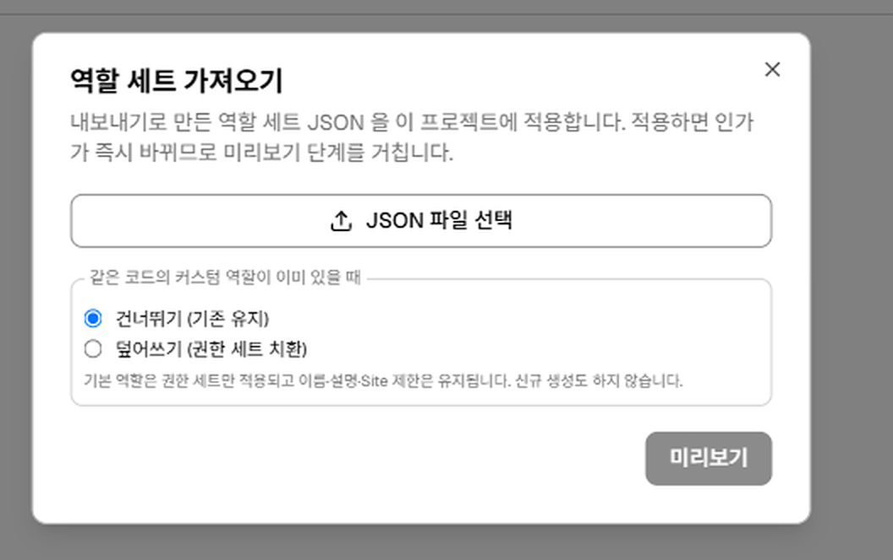
「JSON 파일 선택」 — 내보내기로 만든 파일을 고릅니다. 고르기 전에는 다음 단계로 갈 수 없습니다.
같은 코드의 커스텀 역할이 이미 있을 때 — 건너뛰기는 기존 역할을 그대로 두고, 덮어쓰기는 권한 세트를 파일의 것으로 바꿉니다.
「미리보기」 — 무엇이 바뀌는지 먼저 확인합니다. 파일을 고르기 전에는 흐린 채로 눌리지 않습니다.
창 설명이 절차를 밝힙니다 — “적용하면 인가가 즉시 바뀌므로 미리보기 단계를 거칩니다.”
기본 역할은 예외라는 안내입니다 — “기본 역할은 권한 세트만 적용되고 이름·설명·Site 제한은 유지됩니다. 신규 생성도 하지 않습니다.”
유의사항
필수 확인 데이터 손상 · 폼 완료 불가
- • 미리보기를 본 뒤에는 바로 적용하십시오. 미리보기와 적용 사이에 다른 사람이 역할을 바꾸면 적용이 전건 거부되고 “미리보기 이후 대상 역할이 변경됐습니다. 아무것도 적용되지 않았습니다 — 미리보기를 다시 실행해 주세요.” 가 표시됩니다. 일부만 적용되는 일은 없으므로 중간 상태를 걱정할 필요는 없고, 미리보기부터 다시 하면 됩니다. 또한 「덮어쓰기」는 되돌리기 어렵습니다 — 적용 전에 「세트 내보내기」로 현재 구성을 먼저 받아 두는 편이 안전합니다.
역할 배정
- 3.1배정 목록
- 3.2신규 역할 배정
3.1배정 목록
개요
누가 어떤 역할로 이 프로젝트에 참여하는지를 관리하는 화면입니다. 역할 목록이 역할의 정의를 다룬다면 여기는 사람과 역할의 연결을 다룹니다. 한 사람에게 담당 기관과 유효 기간을 함께 지정할 수 있어, 기간이 끝나면 자동으로 효력이 사라지게 둘 수도 있습니다.
화면 설명

역할 필터 — 특정 역할의 배정만 추려 봅니다. 역할 목록의 「배정하기」 로 들어오면 그 역할이 이미 선택된 상태입니다. 옆의 Site 필터와 검색(이름·이메일)도 함께 쓸 수 있습니다.
「비활성 포함」 — 해제된 배정까지 함께 봅니다. 평소에는 꺼 두고, 과거 배정을 확인할 때만 켭니다.
「이력」 — 배정이 언제 바뀌었는지 봅니다 4.3.
「+ 신규 배정」 — 배정 창을 엽니다 3.2.
⋯ — 그 배정의 액션 메뉴입니다.
화면 부제 — “사용자별 프로젝트 역할과 담당 기관을 관리합니다.”
표시 N / 전체 N — 필터로 걸러진 수와 전체 수입니다.
표는 7열입니다 — 사용자 · 역할 · SITE · 유효 기간 · 배정 · 활성 · 액션. 사용자 칸에는 이름과 이메일이 함께 표시됩니다.
유효 기간 — 기간을 지정하지 않았으면 「— ~ 무기한」 입니다. 캡처가 그 상태입니다.
하단 안내 — 배정하려는 사람이 목록에 없을 때의 안내입니다. 워크스페이스 멤버가 아니면 배정 자체를 할 수 없고, 먼저 워크스페이스 멤버 관리에서 추가해야 합니다 (아래 유의사항).
유의사항
오해하기 쉬운 동작
- • 워크스페이스 멤버가 아닌 사람은 배정할 수 없습니다. 배정 창의 사용자 목록은 워크스페이스 멤버 중에서만 고르게 되어 있어, 아직 멤버가 아닌 사람은 아예 나타나지 않습니다. 화면 아래 안내의 링크를 따라 워크스페이스 멤버 관리에서 먼저 추가한 뒤 돌아와서 배정하십시오. 「사용자 선택」 목록에 찾는 사람이 없다면 이름을 잘못 찾는 것이 아니라 멤버가 아닌 경우가 대부분입니다.
3.2신규 역할 배정
개요
사람 한 명에게 역할을 붙이는 창입니다. 사용자와 역할 둘만 정하면 배정되고, 담당 기관과 유효 기간은 필요할 때만 지정합니다. 역할 목록의 「배정하기」 로 들어왔다면 역할이 이미 채워져 있으므로 사람만 고르면 됩니다 — 캡처가 그 상태입니다.
화면 설명
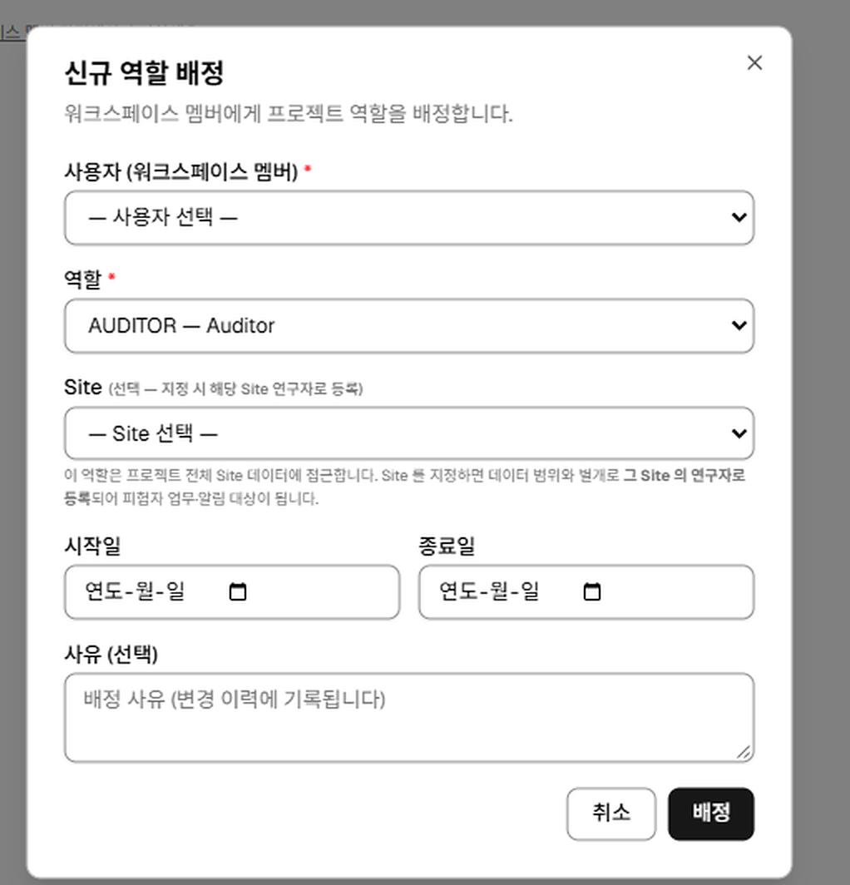
사용자 (워크스페이스 멤버) — 배정할 사람을 고릅니다. 워크스페이스 멤버만 목록에 나옵니다 (3.1 유의사항 참조).
역할 — 어떤 역할로 참여시킬지 고릅니다. 캡처는 AUDITOR 가 미리 선택되어 있습니다.
Site — 담당 기관입니다. 고르지 않으면 프로젝트 전체를 봅니다 (아래 유의사항).
시작일 — 비워 두면 즉시 적용됩니다.
종료일 — 비워 두면 무기한입니다. 넣어 두면 그 날 이후 자동으로 효력이 사라져, 일일이 해제하지 않아도 됩니다.
사유 — 적어 두면 변경 이력에 함께 기록됩니다 4.3. 선택이지만 감사 대응에서는 적어 두는 편이 좋습니다.
「배정」 — 배정을 확정합니다. 목록에 한 줄이 추가됩니다.
창 설명 — “워크스페이스 멤버에게 프로젝트 역할을 배정합니다.”
Site 를 지정했을 때의 결과를 밝힌 안내입니다 — 그 기관의 연구자로도 등록되어 업무·알림 대상이 됩니다.
유의사항
필수 확인 데이터 손상 · 폼 완료 불가
- • 「Site」는 단순한 범위 지정이 아닙니다. 비워 두면 그 역할은 프로젝트 전체 기관의 자료를 보지만, 기관을 하나 지정하면 그 기관의연구자로도 등록되어 업무·알림 대상이 됩니다 — 화면이 그 점을 직접 안내합니다. 즉 조회 범위를 좁히려고 무심코 기관을 고르면 그 기관의 업무까지 받게 됩니다. 모니터요원처럼 여러 기관을 담당하는 경우에는 비워 두고, 기관 소속 연구간호사처럼 실제로 그 기관의 업무를 맡는 경우에만 지정하십시오.
권한 확인과 이력
- 4.1역할-권한 매트릭스
- 4.2기본 역할 템플릿
- 4.3역할 변경 이력
4.1역할-권한 매트릭스
개요
어떤 역할이 무엇을 할 수 있는지를 한 표에서 보고 고칩니다. 권한이 행, 역할이 열이고 교차하는 칸의 체크가 곧 그 역할의 권한입니다. 권한은 수가 많으므로 도메인별로 접히는 그룹으로 묶여 있고, 위쪽 검색으로 좁혀 찾습니다. 고친 내용은 「저장」을 눌러야 반영됩니다.
화면 설명
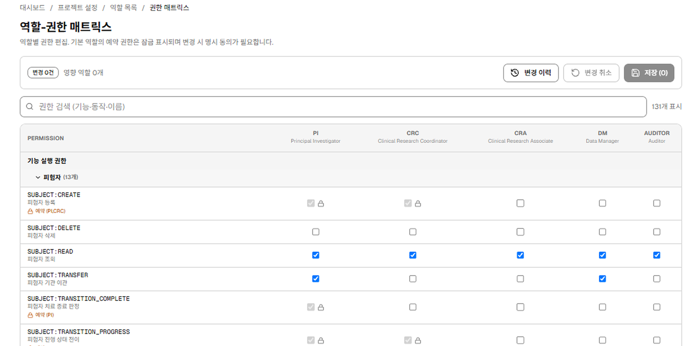
검색 — 권한 이름·기능·동작으로 좁힙니다. 찾는 권한이 어느 그룹에 있는지 모를 때 가장 빠른 길입니다.
「변경 이력」 — 권한이 언제 어떻게 바뀌었는지 봅니다 4.3.
「저장 (N)」 — 고친 내용을 반영합니다. 괄호 안이 고친 칸 수이고, 0 이면 눌리지 않습니다. 되돌리려면 왼쪽 「변경 취소」 를 누릅니다.
화면 부제가 규칙을 미리 밝힙니다 — “기본 역할의 예약 권한은 잠금 표시되며 변경 시 명시 동의가 필요합니다.”
변경 N건 · 영향 역할 N개 — 저장하기 전에 얼마나 많은 역할이 영향을 받는지 여기에서 확인합니다.
N개 표시 — 지금 보이는 권한 수입니다. 검색을 걸면 이 숫자가 줄어듭니다.
열이 곧 역할입니다 — 캡처는 기본 5종(PI · CRC · CRA · DM · AUDITOR). 커스텀 역할을 만들면 열이 늘어납니다.
도메인 그룹 — “피험자 (13개)” 처럼 묶여 있고 접었다 펼 수 있습니다.
자물쇠 + 「예약」 — 그 역할의 핵심 권한이라 해제할 수 없는 칸입니다 (아래 유의사항).
체크 칸 — 눌러서 켜고 끕니다. 고친 칸은 색으로 구분되고 위쪽 변경 건수에 반영됩니다.
유의사항
필수 확인 데이터 손상 · 폼 완료 불가
- • 잠긴 칸에는 세 가지 서로 다른 이유가 있습니다. ① 기본 역할의 핵심 권한 — 연구책임자에게서 피험자 철회 권한을 뺄 수 없는 것처럼, 그 역할을 그 역할이게 하는 권한은 해제할 수 없습니다(캡처의 “예약 (PI,CRC)”). ② 플랫폼 등급 권한 — 프로젝트 역할에는 어떤 경우에도 줄 수 없습니다. ③ 시스템 관리자 전용 권한. 다만 직접 만든 커스텀 역할에서는 ① 이 잠기지 않고 켤 수 있으며, 저장할 때 「예약 권한 변경 확인」 창이 떠 한 번 더 동의를 받습니다 — 규제상 책임이 따르는 권한이므로 누구에게 왜 주는지 분명할 때만 사용하십시오.
4.2기본 역할 템플릿
개요
기본 5종 역할이 원래 어떤 역할인지를 설명하는 읽기 전용 화면입니다. 각 역할의 주요 책임과 그 책임의 규제 근거가 카드로 정리되어 있어, 권한을 조정하기 전에 그 역할이 왜 그 권한을 갖는지 확인하는 데 씁니다. 프로젝트별 역할과는 무관한 원본이므로 여기에서는 아무것도 바뀌지 않습니다.
화면 설명

「읽기 전용」 배지 — 이 화면에서는 고칠 수 없습니다.
화면 부제 — “학습·참조용 읽기 화면입니다. 프로젝트별 역할과 무관하게 기본 역할 템플릿 5종의 권한 매트릭스를 표시합니다.”
카드 오른쪽 배지 2종 — 권한 개수와 Site 제한 여부입니다. 역할마다 권한 수가 다른 것을 여기에서 한눈에 비교할 수 있습니다.
주요 책임 — 그 역할이 맡는 일을 간추린 목록입니다.
규제 근거 — 그 책임이 어느 규정에서 나오는지 밝힙니다 (예: ICH-GCP §4 Investigator Responsibilities). 권한을 줄이거나 늘릴 때 근거로 삼을 자리입니다.
전체 권한 매트릭스 (도메인별) — 카드 아래에 5종 × 전체 권한 표가 이어집니다.
표의 열도 기본 5종이며, 가진 권한에 초록 체크가 표시됩니다. 편집용 매트릭스 4.1와 달리 체크박스가 아니라 표시만 합니다.
유의사항
오해하기 쉬운 동작
- • 이 화면의 내용과 우리 프로젝트의 실제 권한은 다를 수 있습니다. 여기는 시스템이 정해 둔 원본이고, 프로젝트에서 권한을 조정했다면 실제 값은 역할-권한 매트릭스 4.1 에 있습니다. 지금 무엇이 되는지를 확인할 때는 4.1 을, 원래 어떤 역할인지를 확인할 때는 이 화면을 보십시오. 권한 문의를 받았을 때 두 화면을 함께 열어 원본과 현재의 차이를 보면 언제 무엇이 바뀌었는지 짐작할 수 있고, 그 변경 시점은 이력 4.3 에서 확인합니다.
4.3역할 변경 이력
개요
역할과 배정이 언제 · 누구에게 · 무엇에서 무엇으로 바뀌었는지를 모아 보는 화면입니다. 덧붙이기만 가능해서 한 번 쌓인 줄은 고치거나 지울 수 없습니다 — 잘못 기록된 것이 있으면 바로잡는 새 줄을 추가하는 방식으로 정정합니다. 화면은 사람의 배정 이력이 기본이고, 역할 자체의 변경은 맨 아래에 따로 있습니다.
화면 설명
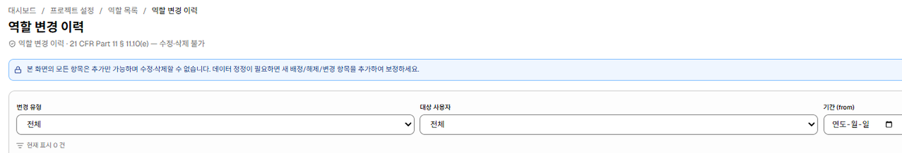
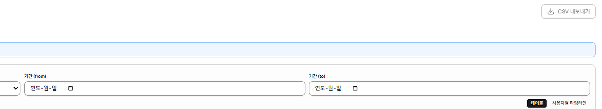
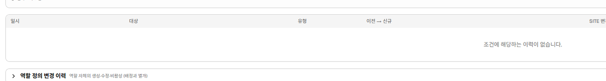
변경 유형 · 대상 사용자 — 어떤 종류의 변경인지, 누구에 대한 변경인지로 좁힙니다.
「CSV 내보내기」 — 지금 화면에 보이는 항목을 파일로 받습니다.
기간 (from) — 이 날짜부터.
기간 (to) — 이 날짜까지.
「테이블」 / 「사용자별 타임라인」 — 표로 볼지, 사람별로 묶어 시간 순서대로 볼지 고릅니다. 한 사람의 역할이 어떻게 옮겨 다녔는지 볼 때는 타임라인이 편합니다.
부제가 이 화면의 성격을 밝힙니다 — 21 CFR Part 11 § 11.10(e) · 수정·삭제 불가.
파랑 안내 — “본 화면의 모든 항목은 추가만 가능하며 수정·삭제할 수 없습니다. 데이터 정정이 필요하면 새 배정/해제/변경 항목을 추가하여 보정하세요.”
현재 표시 N 건 — 필터에 걸린 건수입니다.
표는 7열입니다 — 일시 · 대상 · 유형 · 이전 → 신규 · SITE 변경 · 사유 · 수행자. 사유 열에는 배정할 때 적어 둔 사유가 그대로 나옵니다 3.2.
「역할 정의 변경 이력」 — 접혀 있는 영역을 펼치면 역할 자체의 생성·수정·비활성화가 나옵니다. 배정 이력과는 별개이므로 권한이 언제 바뀌었는지는 이쪽에서 찾습니다.
유의사항
필수 확인 데이터 손상 · 폼 완료 불가
- • 이 화면은 감사자와 워크스페이스 관리자만 들어올 수 있습니다. 그런데 역할 목록 화면의 「이력」 버튼은 누구에게나 보입니다 — 연구책임자나 데이터 관리자가 눌러도 이동은 되지만 들어오면 권한 안내로 막힙니다. 버튼이 보인다고 열람 권한이 있는 것은 아니니, 이력이 필요하면 감사자나 워크스페이스 관리자에게 요청하십시오. 이력은 「CSV 내보내기」로 전달할 수 있는데, 받는 범위가 지금 화면에 보이는 항목까지이므로 기간 필터를 먼저 맞춘 뒤 내보내야 합니다.